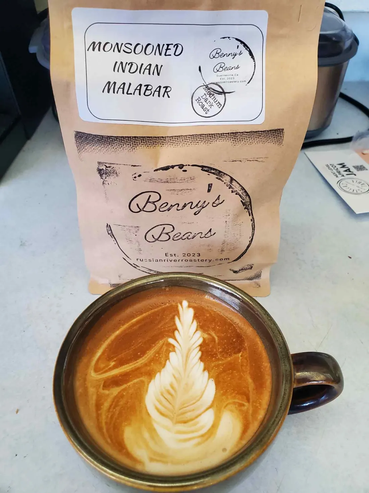
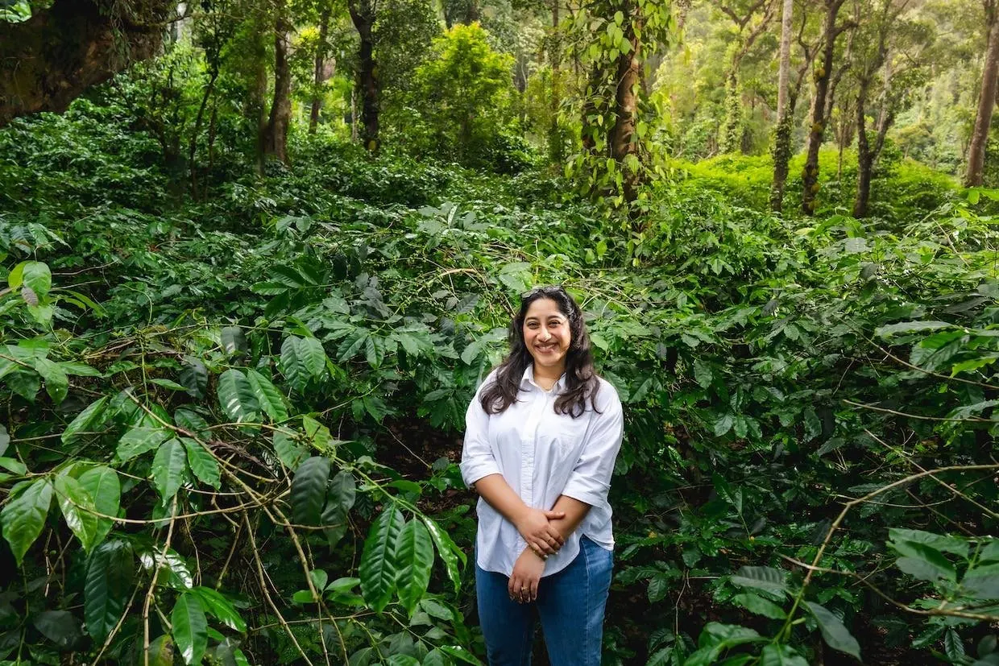
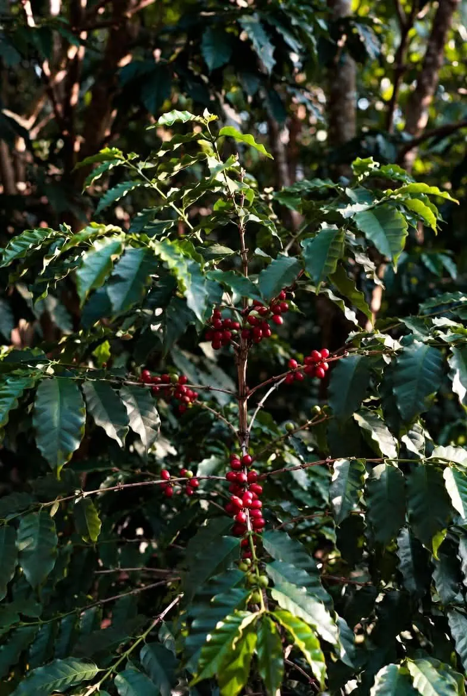

Guerneville, CA · Est. 2023
One roaster.
Two roast days.
Zero shortcuts.
Benny's Beans is Benny: a self-taught roaster on the Russian River who got tired of coffee that sat in a warehouse for months. So he stopped keeping roasted coffee at all. Every bag is roasted after somebody orders it.

The bag. The latte. The point.In Benny's words
"I specialize mainly in single origins. Every batch is roasted to perfection. I use specialized cooling conditions which create a much sweeter bean. My grinder has been customized to grind at a much lower RPM. Heat depletes flavor during grinding."
Benny
"At this point I do consider myself a self-taught artisan. Lots of experience under my belt. If you have any questions or would like to inquire about wholesale pricing, please let me know!"
From Benny's own site. He means it about the questions: text him at 707-899-4183.
How a bag gets made
Five steps.
No shelf.
Order today, it roasts and ships .
Source
Single origins from across the globe, chosen one lot at a time. Ethiopia, Colombia, Mexico and the shade-grown estates of South India.
Roast
Small batches every Monday and Wednesday, to the level you chose, or to Roaster's Choice.
Cool
Benny's specialized cooling, right off the drum. It's why people say his coffee tastes sweeter.
Grind
Only if you asked. A modified grinder at low RPM, so heat doesn't strip the flavor out.
Ship
Out the next morning, or onto the will-call shelf at True Value in Guerneville.
Where the beans come from
Grown in the shade.
Roasted by the river.
The Indian coffees grow at high altitude under a canopy of pepper, cardamom and fruit trees. They ripen slowly, and their roots share the same soil, which is where South Indian coffee gets its rich body and low acidity.

Shade-grown estates · Coorg, India
Coffee is a fruit firstRoaster's Choice
Let the roaster
choose.
Every coffee comes Light, Medium, Medium Dark, Dark or French. But each lot roasts a little differently, batch to batch. Roaster's Choice means Benny takes it where that bean tastes best, based on what he sees in the roast.
His own description: "Based on per batch experience. Optimal roast from my POV." If you've never picked a roast level before, start here.